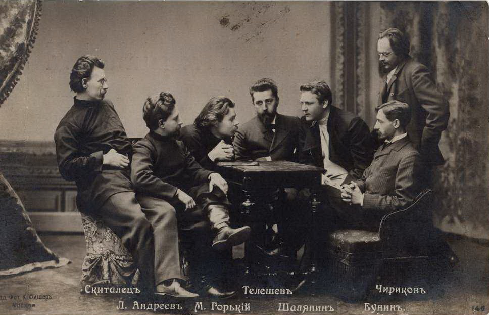

Усадьба Телешовых
Усадьба Телешовых находилась около искусственного водоёма, который был выкопан в XIX в. Поэтому дачу назвали «Озеро».
Имение было куплено купцом Николаем Дмитриевичем Телешовым в августе 1902 года. В 1903 году шло строительство деревянного дома. Земля была большая, поэтому там были дома для гостей. Также Телешовы сдавали землю под дачи, с этого они имели доход. Дачи очень подходили для семейного, тихого отдыха и для творческих людей, которые нуждались в уединении. В основном, на дачах жили летом, а зимой уезжали. Спустя время, чтобы была возможность проводить там и зимние месяцы, был построен каменный флигель. Сад-цветник доходил до озера. Имение «Озеро» мы можем сейчас увидеть на картинах Елены Андреевны Телешовой.
Николай Телешов был не только купцом, но и писателем и благотворителем. В 1899 году Николай Телешов создал литературный кружок «Среда», который собирался преимущественно в его усадьбе на Покровском бульваре. На его заседаниях бывали Л.Н.Анлреев, К.Д.Бальмонт, В.Я.Бунин, И.А.Бунин, А.С.Серафимович, В.В.Вересаев, А.М.Горький, А.П.Чехов, Ф.И.Шаляпин, С.В.Рахманинов, И.Е.Репин, В.М.Васнецов. В 1913 году «Среда» стала творческим союзом.
В летнее время собрания проводились в Малаховке, благодаря чему в посёлок устремились писатели, поэты, художники, певцы и музыканты. Некоторые упоминали в своих произведениях Малаховку, описывали её окрестности. Так, например, в рассказе Бунина «Кума» встречаем такой отрывок, описывающий, очевидно, дачу Телешовых: «Дачи в сосновых лесах под Москвой. Мелкое озеро, купальни возле топких берегов. Одна из самых дорогих дач на берегу озера: дом в шведском стиле, прекрасные старые сосны и яркие цветники перед обширной террасой».
Члены «Среды» имели возможность влиять на самые разные стороны жизни.
Через Литературно-художественный кружок они помогали писателям, артистам, художникам и просто людям труда, впавшим в беду или крайность; через Общество периодической печати и литературы с его судом чести защищали достоинство отдельных деятелей науки и литературы, через прессу взаимопомощи литераторов и ученых собирались товарищеские средства.

Авторитет «Среды» стоял высоко, и нередко к ней обращались общественные группы, когда возникали серьезные принципиальные конфликты и требовалось третейское решение. В таких случаях «Среда» указывала на одного из своих сотоварищей, и его избирали в судьи.
Телешовы активно участвовали в жизни посёлка, входили в состав Общества благоустройства посёлка Малаховка. Только благодаря исключительной энергии Николая Дмитриевича удалось открыть в Малаховке «первую в России деревенскую гимназию».
В 1921 году имение Телешовых было национализировано. Дачные постройки были переданы под учебные цели, их занял педагогический техникум, в 1933 году преобразованный в Московский областной техникум физической культуры. В 1960 году техникум стал Центральной школой тренеров РСФСР, а она в 1976 году – Московским областным государственным институтом физической культуры. С 1994 года институту присвоен статус Академии.
В середине декабря 2013 года флигель дачи Н.Д. Телешова – памятник регионального значения – разобрали с тем, чтобы собрать в другом месте. Но этого не произошло, и теперь уникальное историческое строение не подлежит восстановлению: его составные части сгнили…